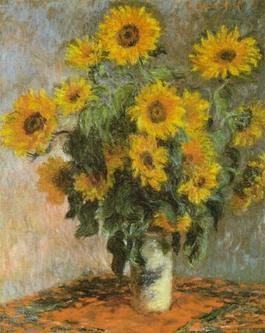
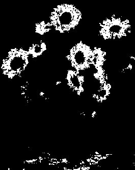
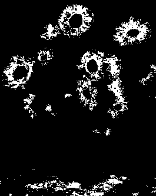
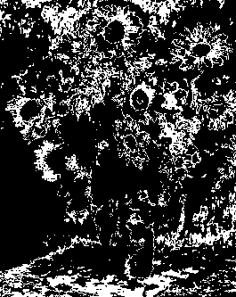

Color Thresholding
Use color thresholding to specify a color range and return a black and white image. All colors between the start and stop colors (inclusively) become white and the rest of the image pixels become black. The two colors are separated with a hyphen between them. Thresholding, by default, take place in the sRGB colorspace. Use the -colorspace to perform the thresholding in an alternative colorspaces (currently limited to sRGB, Gray, HSV, HSL, HCL, HSB, and HSW). Start and stop colors can be specified in any colorspace (recognized by ImageMagick), but in general, we advise you specify them in the colorspace corresponding to the -colorspace option. For colorspace Gray, be sure to use a start value lower than the stop value. Note that Hue is cyclical -- 0 and 360 are the same. However, a range of colors that spans hue = 0 may still be useful, if the start hue value is higher than the stop hue value.
Caution is advised when mixing the colorspace of the start and stop colors and that of the image. A large range in one colorspace may map to only a narrow range in another colorspace. For example, one might naively think that sRGB(0,0,0) to sRGB(255,255,255) would produce a white image, catching all colors, even when using -colorspace HSV. But these two colors are black and white and so map only to a range of grayscale as hsv(0,0%,0%) and hsv(0,0%,100%). For a color image, you would likely not find too many gray pixels.
To illustrate how color thresholding performs, use this image:
convert input-image -colorspace XXX -color-threshold "start - stop" output-image
The following are some typical examples of use:
- 
Start by choosing one sRGB color (somewhere on the image -- in this case the yellow of the flowers) and offset it low and high to form two sRGB colors. The lower values form the start color and the higher values form the stop color. Begin with sRGB(183,132,20). Offset its values by +-20 to identify the start color (-) and the stop color (+); namely, R=183+-20, G=132+-20, and B=40+-20:
magick monet.jpg -color-threshold 'sRGB(163,112,0)-sRGB(203,152,40)' monet.gif
this returns the outline of the yellow flower petals:
- 
Now, pick two RGB colors: sRGB(159,150,0) and sRGB(205,100,45):
magick monet.jpg -color-threshold 'sRGB(159,150,0)-sRGB(205,100,45)' monet.gif
- 
Next, select one sRGB color and convert it to HSV and offset its values low and high to generate the start and stop HSV colors. Use -colorspace HSV to convert the image to HSV. For our HSV example, we pick sRGB(183,132,20) and convert to HSV:
magick xc:"srgb(183,132,20)" -colorspace HSV txt: # ImageMagick pixel enumeration: 1,1,65535,hsv 0,0: (41.227,89.071%,71.7647%) #1D51E405B7B7 hsv(41.227,89.071%,71.7647%)
Now, offset its HSV values as H=41+-20, S=89+-10, and V=72+-10, to create the start color (-) and stop color (+):
magick monet.jpg -colorspace HSV -color-threshold 'hsv(21,79%,62%)-hsv(61,99%,85%)' monet.gif
Next, pick two RGB colors. Use -colorspace HSV to convert the image to HSV, and apply the RGB start and stop colors. Choose sRGB(158,77,33) and sRGB(213,217,2):
magick monet.jpg -colorspace HSV -color-threshold "sRGB(158,77,33)-sRGB(213,217,2)" monet.gif
Here is the expected results:
Next, choose two sRGB colors and convert them to gray. Now convert the image to gray and use the gray thresholding colors.
magick xc:"sRGB(159,150,0)" -colorspace gray txt: # ImageMagick pixel enumeration: 1,1,65535,gray 0,0: (36259.1) #8DA38DA38DA3 gray(55.3278%) magick xc:"sRGB(205,100,45)" -colorspace gray txt: # ImageMagick pixel enumeration: 1,1,65535,gray 0,0: (30418.2) #76D276D276D2 gray(46.4152%)
Notice that the start intensity must be smaller than stop intensity:
magick monet.jpg -colorspace gray -color-threshold 'gray(46.4152%)-gray(55.3278%)' monet.gif
Here is the results of the color thresholding operation:
- 